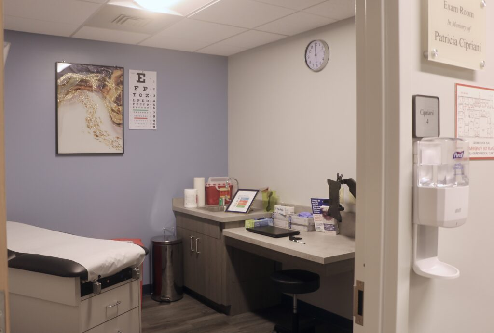

Patient Information
Everything you need to know to get free healthcare at Will‑Grundy Medical Clinic.
What to expect
Your visit at a glance
A quick look at eligibility, what to bring, your appointment flow, and aftercare support.

Eligibility
Eligibility
WGMC serves adults in Will & Grundy Counties who are uninsured or underinsured. If you are unsure whether you qualify, please call us — we'll help.
Checklist
What to Bring
- Photo ID (if you have one)
- Any medications you are currently taking
- Any relevant medical records or notes
- Proof of income (if available)
Visit flow
Your Visit
Our friendly team will guide you through check‑in and your appointment. Interpreters are available. There is no cost for care; donations are welcome but never required.
Aftercare
Aftercare
We help with follow‑ups, referrals, and access to medications whenever possible. Call us if you have questions after your visit.
Hours & Contact
Address: 213 East Cass Street, Joliet, IL 60432
Phone: (815) 726‑3377
Hours:
Monday–Thursday: 9:00 a.m. – 5:00 p.m. Saturday Clinics (Twice Monthly): 9:00 a.m. – 2:00 p.m. (By appointment only)